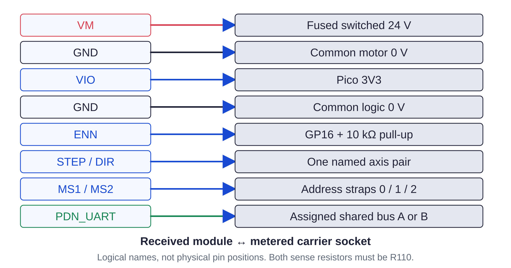

Controller / received parts115 / 179
Map the received driver pins
A TMC2209 module and its carrier must agree on every named pin. A trimmer position or an A4988 carrier label does not establish that agreement.
Add6 BIGTREETECH TMC2209 V1.3 modules · received pin drawings
Tools / setupPower unplugged · continuity meter · close photograph

- Photograph each module label and both R110 sense resistors.
- Fit two eight-position female sockets per module to its actual spacing. Map every P1A pin using the next page, including CLK to GND.
- Meter the carrier's power rails and terminal labels before inserting a module.
- Record the socket map for all six axes. Leave modules out until the cold continuity page is passed.
Ready when
The selected module drawing, board labels and metered carrier routes agree on all named pins; both resistors read R110 by marking. An unmapped pin or different sense resistor stops that carrier. Repair its map or rebuild the governed settings before applying power.